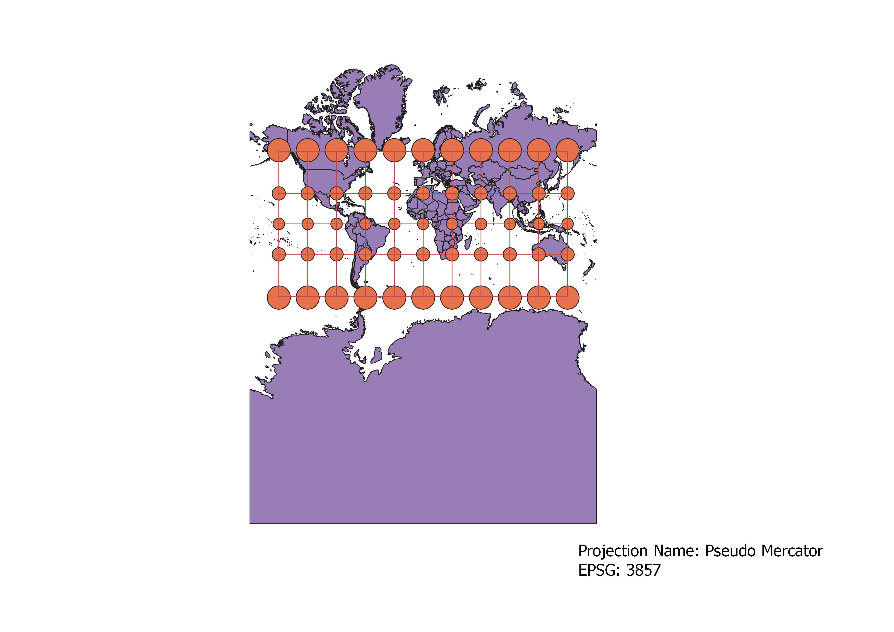
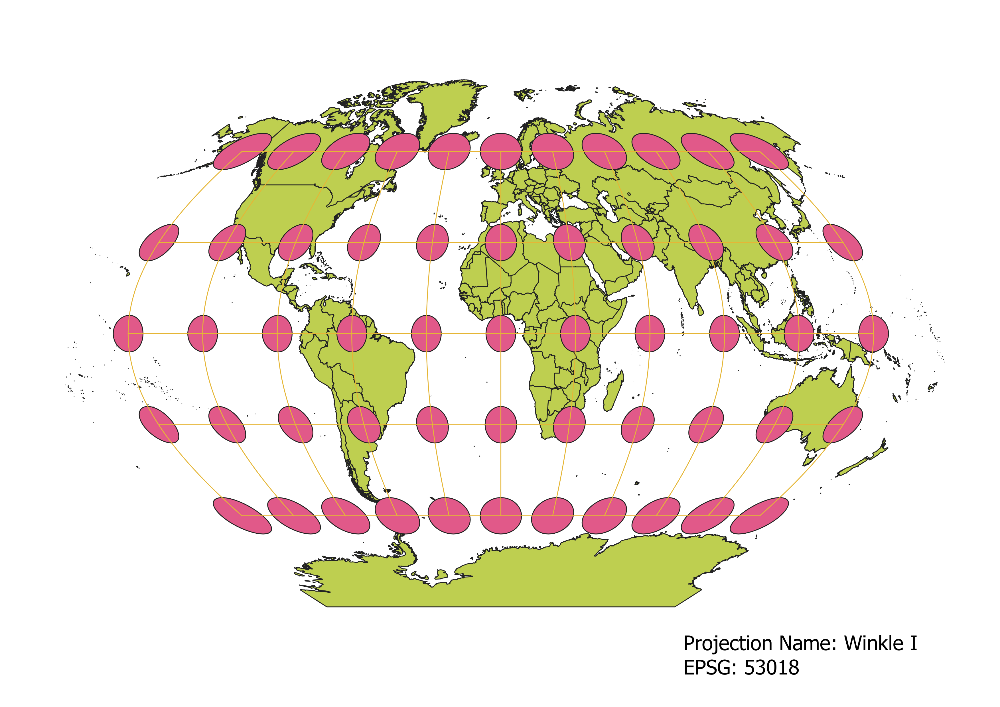
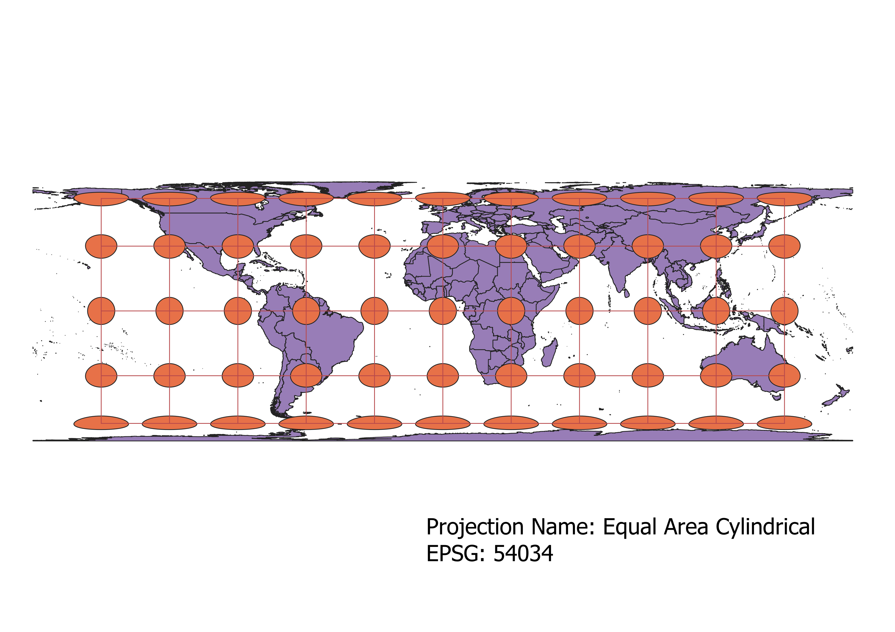
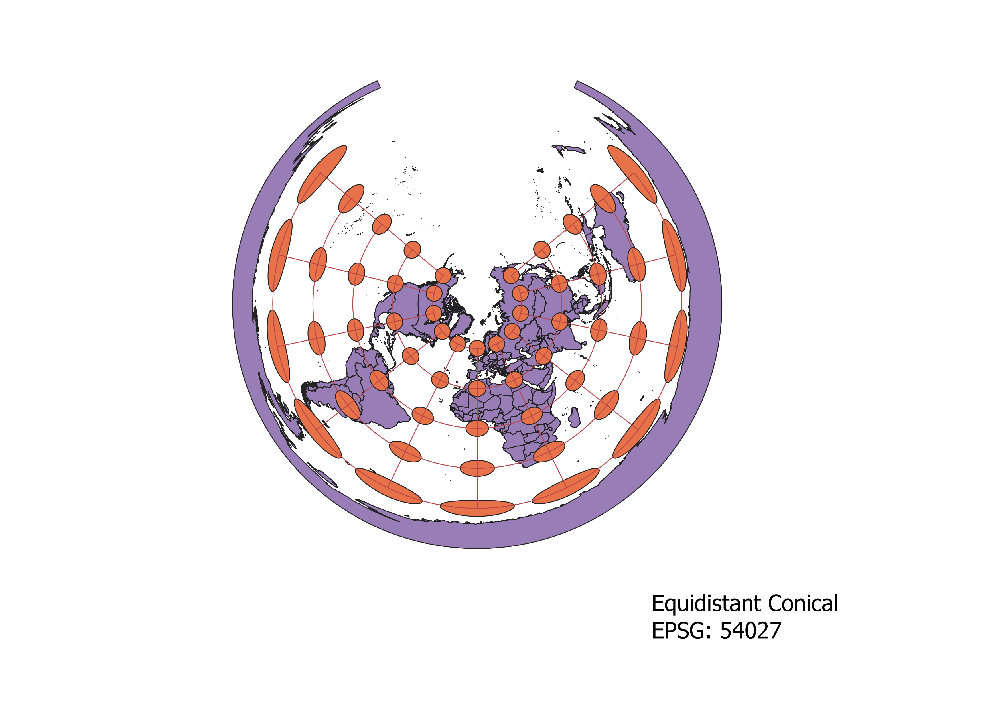
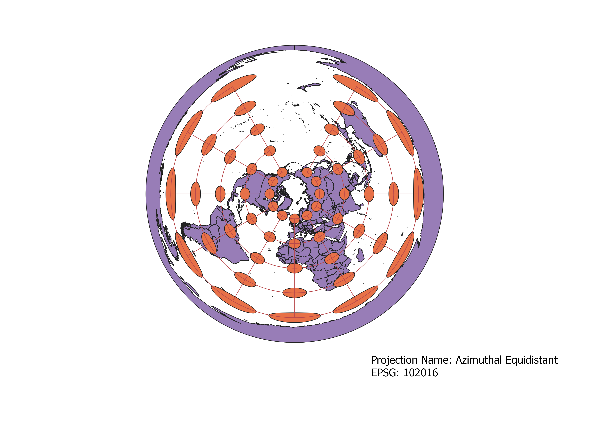
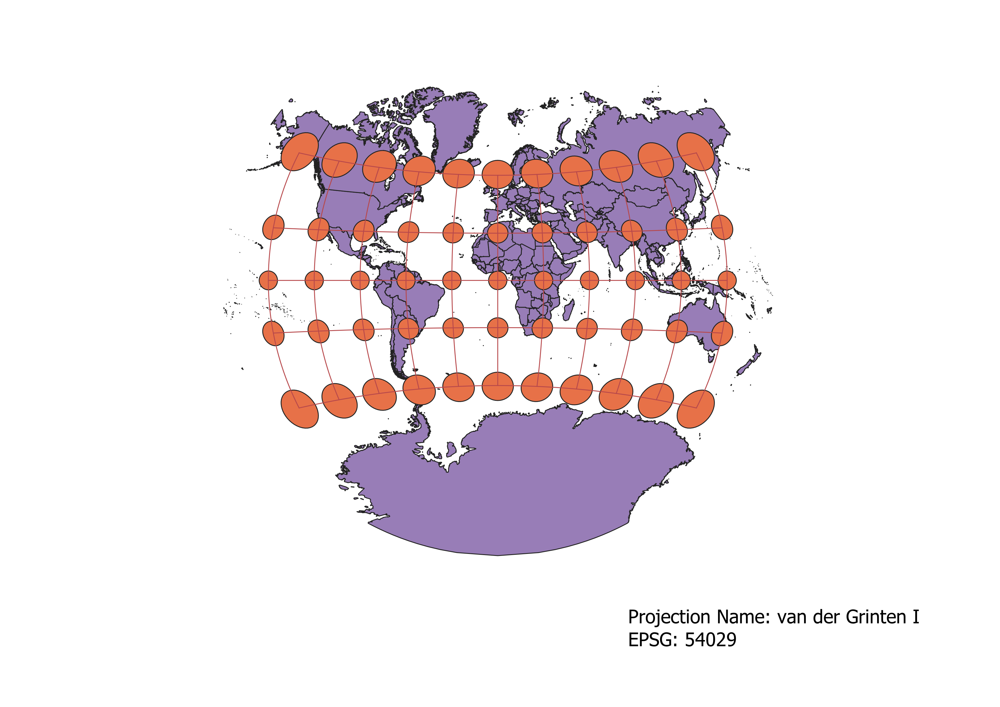
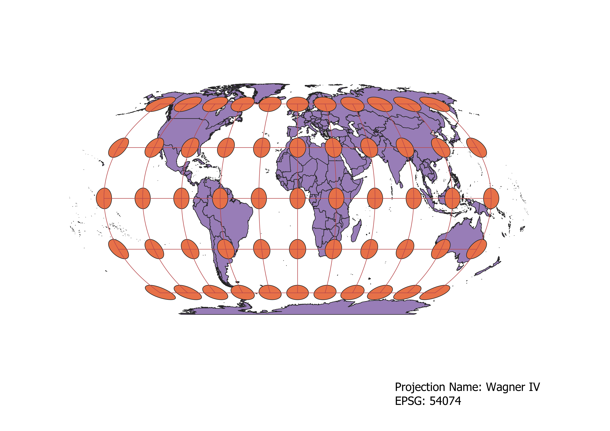

In this project I learned how to display images in different projections
Describe in your own words how you displayed the map in different projections using QGIS
After adding the shape file for the map data into QGIS, I turned on the indicatrix mapper. Then I clicked on the EPSG
number in the bottom right corner to open a window that allowed me to search for projections by number. After applying
these, I selected New Print File in the upper left to apply the map, add a text box for a title, and exported it as a
png.
WGS84 Projection
The WGS84 appears to project distances reliably, as indicated by the similar size grids which extend only slightly
approaching north and south poles. Shape seems to also be preserved towards the equator but distorted near the North
and South poles. Area and angles are not consistent especially approaching North and South poles.

Aitoff Projection
For the Aitoff projection, area and shape are consistent near the the center and become heavily distorted towards the outter edges of the
map. Angles and distance don't appear to be preserved as well towards the west and east edges of the map..

Pseudo Mercator
The Pseudo Mercator map projects angle and shape very well. Distance and area become very distorted approaching the North and South poles.

Winkle I
The Winkle I projection appears to preserve distance somewhat, particularly towards the equator. Shape and angle become more distorted near the equator than they are at the poles and Prime meridian.
The area becomes more distorted towards the North and South poles.

Equal Area Cylindrical
In the Equal Area Cylindrical projection, area is preserved very well. However distance, shape, and angle become distorted
when moving further away from the equator.

Equidistant Conical
The Equidistant Conical projection preserves distance well, but area, shape, and angle become continually more distorted approaching the edges of the map.

Azimuthal Equidistant
The Azimuthal Equidistant projection is very good when trying to preserve distance on a map.
However shape, area, and angle get very distorted toward the outer edges of the globe.

van der Grinten I
The van der Grinten I projection appears to preserve angle and shape very well, though these get somewhat distorted at the very far edges of the map away from the Prime Meridian.
Area is greatly distorted near the North and South poles, and distance appears distorted around all edges of the map.

Wagner IV
The Wagner IV projection seems to preserve shape towards the North and South poles, while becoming more distorted approaching the equator. It does not depict angle well. Area seems preserved closer to the equator but not further
away north or south.

Now, you should add the following projections on your own:
EPSG: 3857, 53018, 54034, 54027, 102016, and two additional projections that you choose.
Data used for this project
Download Natrual Earth 1:10m Cultural Vector